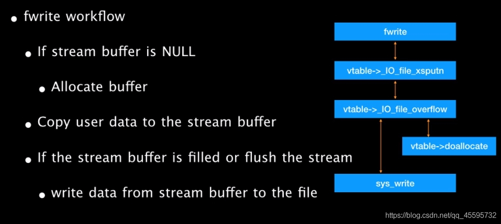
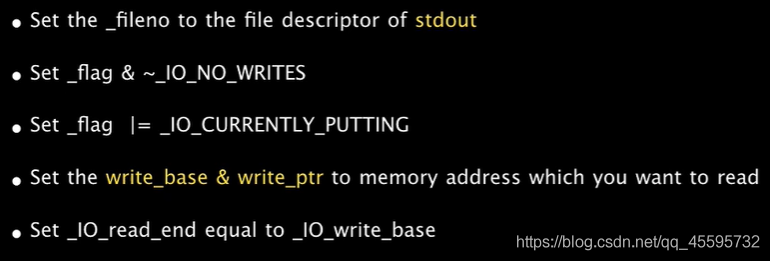
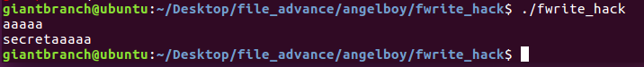
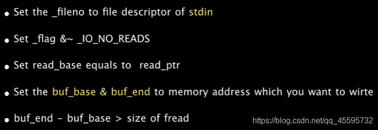
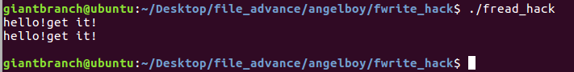

## FILE_advance
glibc2.24中加入了对vtable劫持的检测
在 2.24 版本的 glibc 中，全新加入了针对 IO_FILE_plus 的 vtable 劫持的检测措施，glibc 会在调用虚函数之前首先检查 vtable 地址的合法性。首先会验证 vtable 是否位于_IO_vtable 段中，如果满足条件就正常执行，否则会调用_IO_vtable_check 做进一步检查。
/* Check if unknown vtable pointers are permitted; otherwise,
terminate the process. */
void _IO_vtable_check (void) attribute_hidden;
/* Perform vtable pointer validation. If validation fails, terminate
the process. */
static inline const struct _IO_jump_t *
IO_validate_vtable (const struct _IO_jump_t *vtable)
{
/* Fast path: The vtable pointer is within the __libc_IO_vtables
section. */
uintptr_t section_length = __stop___libc_IO_vtables - __start___libc_IO_vtables;
uintptr_t ptr = (uintptr_t) vtable;
uintptr_t offset = ptr - (uintptr_t) __start___libc_IO_vtables;
if (__glibc_unlikely (offset >= section_length))
/* The vtable pointer is not in the expected section. Use the
slow path, which will terminate the process if necessary. */
_IO_vtable_check ();
return vtable;
}
计算 section_length = __stop___libc_IO_vtables - __start___libc_IO_vtables;，紧接着会判断 vtable - __start___libc_IO_vtables 的 offset ，如果这个 offset 大于 section_length , 即大于 __stop___libc_IO_vtables - __start___libc_IO_vtables 那么就会调用 _IO_vtable_check() 这个函数。
void attribute_hidden
_IO_vtable_check (void)
{
#ifdef SHARED
/* Honor the compatibility flag. */
void (*flag) (void) = atomic_load_relaxed (&IO_accept_foreign_vtables);
#ifdef PTR_DEMANGLE
PTR_DEMANGLE (flag);
#endif
if (flag == &_IO_vtable_check)
return;
/* In case this libc copy is in a non-default namespace, we always
need to accept foreign vtables because there is always a
possibility that FILE * objects are passed across the linking
boundary. */
{
Dl_info di;
struct link_map *l;
if (_dl_open_hook != NULL
|| (_dl_addr (_IO_vtable_check, &di, &l, NULL) != 0
&& l->l_ns != LM_ID_BASE))
return;
}
#else /* !SHARED */
/* We cannot perform vtable validation in the static dlopen case
because FILE * handles might be passed back and forth across the
boundary. Therefore, we disable checking in this case. */
if (__dlopen != NULL)
return;
#endif
__libc_fatal ("Fatal error: glibc detected an invalid stdio handle\n");
}
如果 vtable 是非法的，那么会引发 abort。
这里的检查使得以往使用 vtable 进行利用的技术很难实现
所以需要去寻找新的利用方式
fwrite
先给出fwrite执行的大致流程图

执行过程中的进行实际操作的函数符号(方便在源码中寻找)：
_IO_fwrite==>_IO_new_file_xsputn==>_IO_new_file_overflow==>_IO_new_do_write==>new_do_write==>
_IO_SYSWRITE
这里给出angelboy的一种泄露方式

各个需要检查的位置
Set _flags & ~_IO_NO_WRITES
Set _flags |= _IO_CURRENTLY_PUTTING
#define _IO_NO_WRITES 8
#define _IO_CURRENTLY_PUTTING 0x800
...
int
_IO_new_file_overflow (_IO_FILE *f, int ch)
{
if (f->_flags & _IO_NO_WRITES) /* SET ERROR */
{
f->_flags |= _IO_ERR_SEEN;
__set_errno (EBADF);
return EOF;
}
/* If currently reading or no buffer allocated. */
if ((f->_flags & _IO_CURRENTLY_PUTTING) == 0 || f->_IO_write_base == NULL)
{
...
}
if (ch == EOF)
return _IO_do_write (f, f->_IO_write_base,
f->_IO_write_ptr - f->_IO_write_base); //<=====ourgoal
...
}
Set _IO_read_end == _IO_write_base
static
_IO_size_t
new_do_write (_IO_FILE *fp, const char *data, _IO_size_t to_do)
{
_IO_size_t count;
if (fp->_flags & _IO_IS_APPENDING)
...
else if (fp->_IO_read_end != fp->_IO_write_base)
{
...
}
count = _IO_SYSWRITE (fp, data, to_do); //<=====our goal
....
return count;
}
演示程序
#include<stdio.h>
#include<stdlib.h>
#include<unistd.h>
int main(){
char *msg = "secret";
FILE *fp;
char *buf = malloc(100);
read(0,buf,100);
fp = fopen("key.txt","rw");
//=================================================
fp->_flags &= ~8;
fp->_flags |= 0x800;
fp->_flags |= _IO_IS_APPENDING;
fp->_IO_write_base = msg;
fp->_IO_write_ptr = msg+6;
fp->_IO_read_end = fp->_IO_write_base;
fp->_fileno = 1;
//=================================================
fwrite(buf,1,100,fp);
}
运行结果
 </br> </br>
fread
给出fread执行的大致流程图

一种写入方式

Set read_base == read_ptr
_IO_size_t
_IO_file_xsgetn (_IO_FILE *fp, void *data, _IO_size_t n)
{
...
have = fp->_IO_read_end - fp->_IO_read_ptr;
if (want <= have)
...//copy data from buffer to destination
if (fp->_IO_buf_base
&& want < (size_t) (fp->_IO_buf_end - fp->_IO_buf_base))//buffer size must be larger than read size
{
if (__underflow (fp) == EOF)
...
}
...
}
Set _flags & ~_IO_NO_READS
#define _IO_NO_READS 4
...
int
_IO_new_file_underflow (_IO_FILE *fp)
{
...
if (fp->_flags & _IO_NO_READS)
{
...
return EOF;
}
...
count = _IO_SYSREAD (fp, fp->_IO_buf_base,
fp->_IO_buf_end - fp->_IO_buf_base);//<=====our goal
...
}
演示程序
#include<stdio.h>
#include<stdlib.h>
#include<unistd.h>
int main(){
FILE *fp;
char *buf = malloc(100);
char msg[100];
fp = fopen("key.txt","rw");
//=================================================
fp->_flags &= ~4;
fp->_IO_buf_base = msg;
fp->_IO_buf_end = msg+100;
fp->_fileno = 0;
//=================================================
fread(buf,1,6,fp);
puts(msg);
}
运行结果
